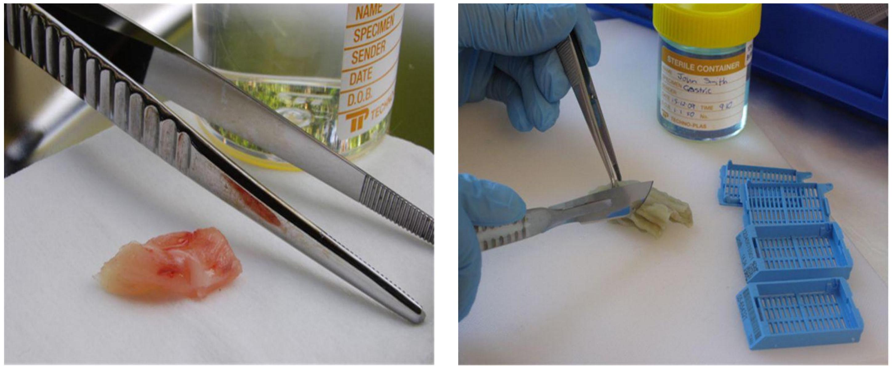
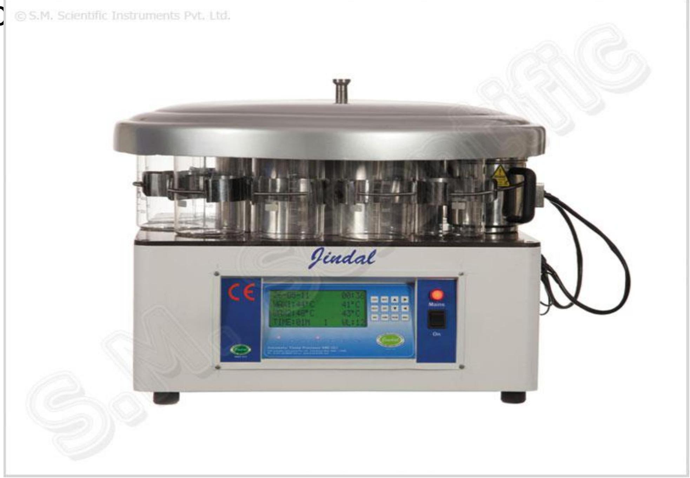
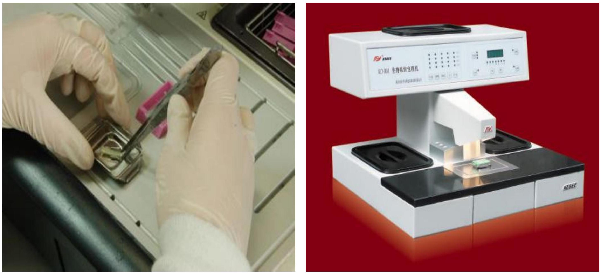
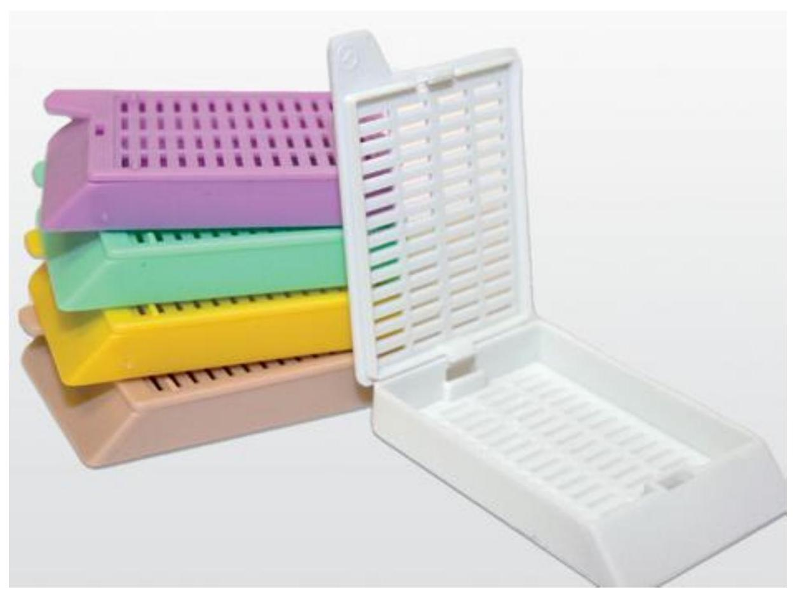
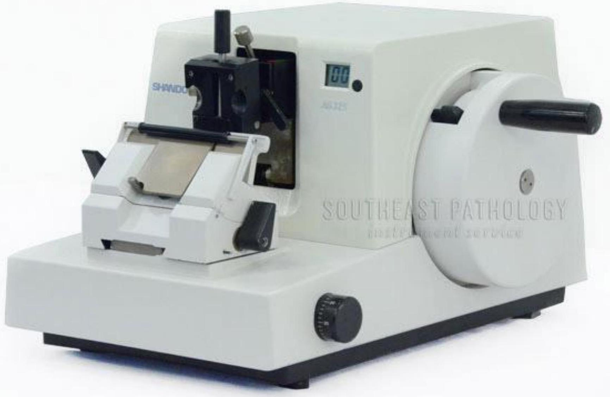
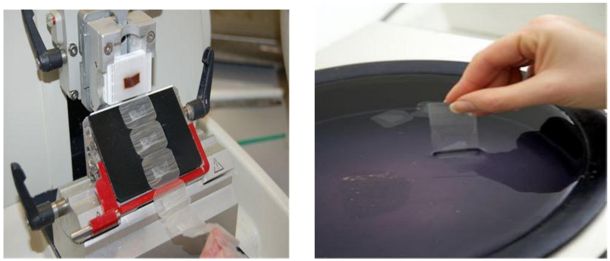
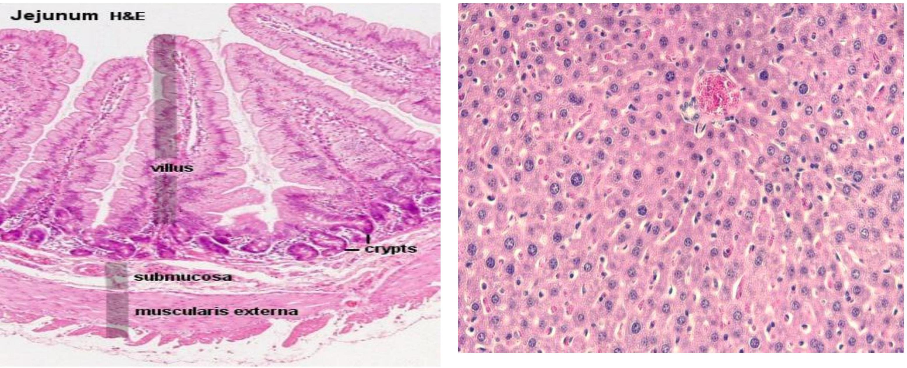
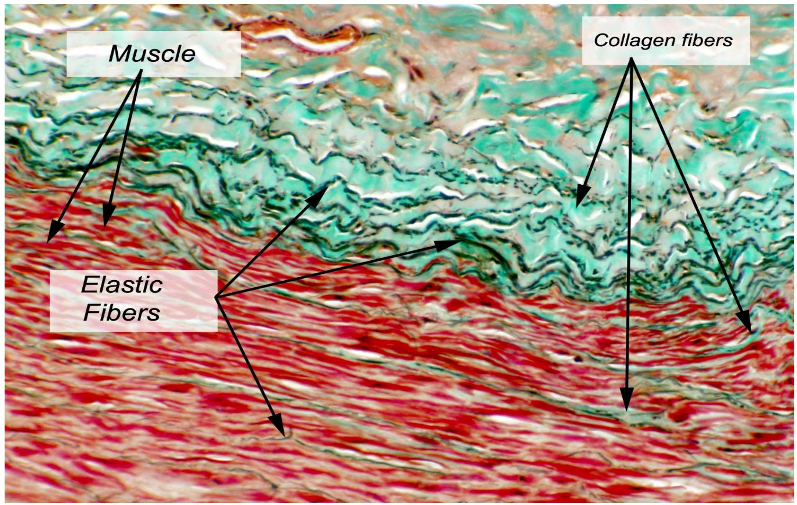
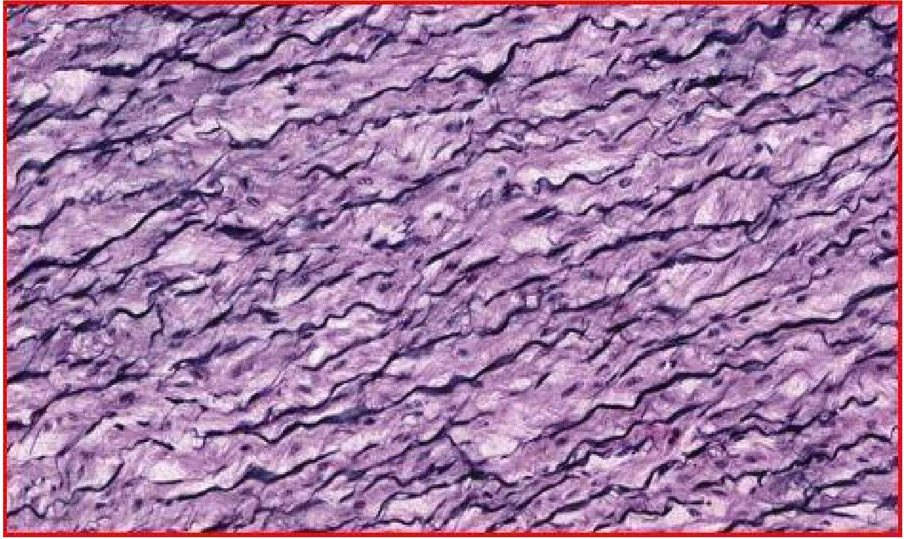
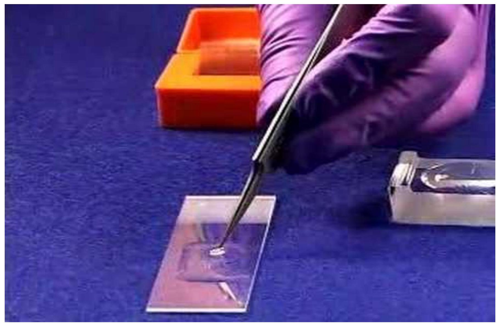

Introduction to Histology
Objectives
By the end of the lecture, the student should be able to:
- Define Histology
- Outline the various stages of preparing slides.
- Scientific basis of the various stages of preparing slides.
What is Histology.
- Is the scientific study of the fine details of cells and tissues using a microscope to look at specimens of tissue that have been carefully prepared using special techniques called Histological techniques.
- Is Greek word -"histos= tissue" and "logos=study".
- Histopathology: microscopic examination of biological tissues to observe the appearance of diseased cells and tissues in very fine details.
- Histo-chemistry: study of the identification and distribution of chemical compounds within and between biological cells using histological techniques such as staining, indicators and light.
Uses of histology
- Education- in teaching abs to help students appreciate the microstructures of biological tissues.
- Diagnosis - to inform treatment options
- Research
- Forensic investigations (Autopsy)- to determine possible causes of sudden death.
- Archeology - for tissues recovered from archeological sites ie bone and teeth, provide insights into history and past events
Steps in slide preparation
- Tissue collection and preparation
- Fixation
- Processing
- Embedding
- Sectioning
- Staining
- Mounting
- Microscopy.
Sample preparation
- Tissues are obtained from closest relatives of man= olive baboon
- 3 months Quarantine = observation for zoonoses
- Darting/anaesthesia
- Perfusion- washing with normal saline and introducing a fixative(mainly formaldehyde) through the carotid artery.
- Immersing the animal in 10% formal saline.
- Purpose of fixation:
- Preserve the tissue in a life-like manner as possible
- Kills the tissue to avoid postmortem changes= autolysis and putrefaction
- Cross-linking thus adding strength to the tissue
Cont'd
- Tissues are obtained in cubes of 1 cm , some times less
- Larger tissues do not fix well as the fixative and embedding media do not penetrate to all the sections.
- Trim wit a sharp blade to obtain regular and fine edges
- Put tissues in specimen bottles and label them ready for processing
Tissue harvesting and trimming.
Tissue Processing
- the purpose is to remove water and replace it with a medium capable of solidifying to allow the sections to be cut. This medium is wax
- Has three stages = Dehydration, Clearing and Infiltration.
- Dehydration is done using ascending grades of alcohol from 70% to absolute, since water is immiscible with wax.
- Clearing is replacing alcohol with a clearing agent like xylene, picric acid, cedar wood oil, etc.
- Infiltration is filling the tissue air spaces with molten wax
- Done in the oven at 600 C for 8-14 hours
Typical processing schedule
| Process | Solution | Time | |
|---|---|---|---|
| Dehydration | 70% alcohol | 60 mins | |
| Dehydration | 90% alcohol | 45 mins | |
| Dehydration | Absolute alcohol | 45 mins | |
| Dehydration | Absolute alcohol | 45 mins | |
| Dehydration | Absolute alcohol | 60 mins | |
| Clearing | Xylene | 60 mins | |
| Clearing | Xylene | 60 mins | |
| Clearing | Xylene | 60 mins | |
| Infiltration | Paraffin Wax | 30 mins | |
| Infiltration | Paraffin Wax | 60 mins | |
| Infiltration | Paraffin Wax | 90 mins | |
| Blocking Out | Paraffin Wax | n/a |
Cont'd
Processing can be done in two way: manually or by an automatic tissue processc
Embedding
- Tissues are placed into molds along with liquid embedding material such as wax, agar or gelatin which is then hardened.
- Hardening is done by cooling for wax and agar while curing(heating) is done for gelatin and resins e.g. epoxy.
- Orientation of tissue is done during this process
- Cooled blocks now have a tissue and wax and can be stored for longer periods of time- can provide reference in medicine
Embedding station. Notice the tissue orientation on the left
Tissue cassettes: used both for processing and providing tissue support during sectioning.
sectioning
- Involves 'cutting' and floating
- Sectioning is done using a microtome and a ribbon is obtained.
- For light microscopy, a steel knife mounted in a microtome is used to cut 4-micrometre-thick tissue sections which are mounted on a glass
- For transmission electron microscopy, a diamond knife mounted in an ultra-microtome is used to cut 50-nanometerthick tissue sections which are mounted on a 3-millimeterdiameter copper grid.
- Individual sections are floated on a warm water bath and sections 'fished out' on a slide containing an adhesive, probably egg albumin.
- Slides are arranaed onto racks and allowed to drv in the oven
Rotary Microtome.
Left: Microtome showing a ribbon. Right: floating and fishing out technique
staining
- Biological tissues have little inherent contrast in both light and electron microscopy.
- Staining is required for:
- Tissue contrast
- Highlight particular features of interest.
- There are several kinds of stains
- Three basic staining methods
- Hematoxylin and Eosin (H/E)
- Masson's trichrome
- Weigert's elastic stain.
- Hematoxylin and Eosin(H/E) stain is commonly used.
- Cellular architecture
- Hematoxylin is basic and stains the nuclei blue while Eosin is acidic and stains the cytoplasm red or pink
H/E staining. Nuclei appears dark stained while cytoplasm appears pink.

Masons Trichrome stain
- Has three stains
- Iron Hematoxylin
- Ponceau de xylidine (ponceau)
- Either light green or aniline blue.
- Highlights colagenous fibres and muscle
- Iron Heamatoxylin = nuclei black/dark blue
- Ponceau = muscle, RBCs, fibrin and some cytoplasmic granules
- Light green/aniline blue= collagen, mucin and reticulin fibres
Masson's Trichrome staining. Notice the collagen fibres staining green and muscle red

Weigert's Elastic stain
- Is alcohol based stain.
- Mainly for elastic fibers in heart and blood vessels
- Nuclei appear brownish black and black
- Elastic fibres appear black
Weigert's elasic staning of blood vessel. Used primarily to stain for elastic fibers. Notice the fibres and nuclei staining dark blue

Mounting
- Involves putting a coverslip on the stained tissue.
- Requires an adhesive resin-either water based or resin (water insoluble)
- Mainly DPX used
- Has to have the following characteristics:
- Same refractive index as that of glass.
- Not easily oxidized by air.
- Durable
- Note: avoid introducing air bubbles between the slide and the coverslip.
Mounting of a slide. Notice the pressing to remove air bubbles

Slide Storage
- Slide have to be labelled before storage.
- Mainly the tissue name or number.
- Storage on cupboards (wooden or metallic)